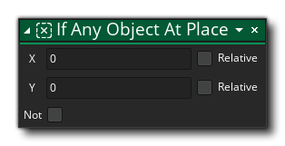

Beschreibung
Diese Aktion wird verwendet, um zu überprüfen und zu sehen, ob es eine Instanz eines Objekts in einer Position auf der Kollisionsmaske der rufenden Instanz auf Basis gelegt ist. Sie geben die Position an, bei der es sich um eine absolute Position oder um eine Position relativ zur Instanz handeln kann, und die Aktion wird zurückgegeben true wenn es eine Kollision gibt oder false wenn nicht Sie können auch das Kennzeichen "Nicht" aktivieren, um zu prüfen, ob an der angegebenen Position keine Kollision vorliegt, und die Aktion kehrt zurück true wenn keine Kollisionen gefunden werden und false Andernfalls. Kollisionen werden basierend auf der Kollisionsmaske der aufrufenden Instanz berechnet, die die Kollisionsmaske einer beliebigen Instanz an der Position überlappt (als ob sie an der Position "platziert" wäre).
WICHTIG! Kollisionen werden nur für die Instanzen registriert, die über eine gültige Kollisionsmaske verfügen, dh: Sie haben ein Sprite zugewiesen sprite_index oder ein Sprite, das dem zugeordnet ist mask_index. Wenn eine der Kollisionsinstanzen keine Kollisionsmaske hat, wird die Kollision nicht erkannt, unabhängig davon, was die Instanz gerade zeichnet.Beachten Sie, dass hinzufügen Aktionen in einen „if“ Block, sollten sie auf der Seite der Aktion fallen gelassen werden, wie im Bild unten dargestellt:

Aktionssyntax:
Argumente:
Streit Beschreibung x Die zu überprüfende x-Position y Die zu überprüfende y-Position
Beispiel:

Der obige Aktionsblockcode prüft auf eine Kollision an der Position, an der sich die Instanz befindet. Wenn eine gefunden wird, mischt sie die Instanz mit Rot. Andernfalls bleibt die Mischung wie normal (weiß).